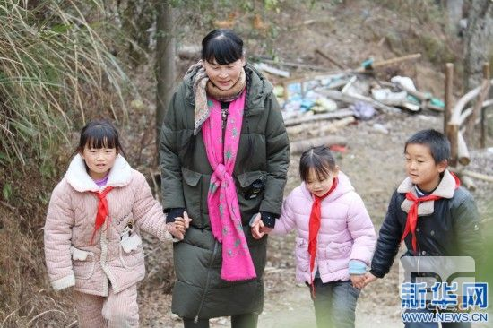
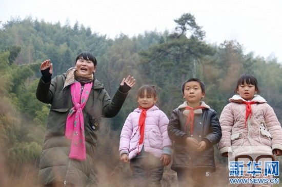

编辑：lilan
2021-01-14 09:40:52
原标题：“此一入山终不悔”——扎根深山教育40年，她何以坚守？
“教育意味着一棵树摇动另一棵树，一朵云呼唤另一朵云。如果可以，我愿意永远做那棵树、那朵云，用自己的灵魂去呼唤另一个灵魂。让更多的孩子走出大山，远离贫困。”
——江西省奉新县澡下镇白洋教学点乡村教师 支月英
40年前，19岁的支月英成了江西奉新县澡下镇贫困深山里的一名乡村教师，两条麻花辫，一身无畏感。
40年后，她仍如此。
辫已泛白，身已疲病。
她说，40年，有愧，无悔。
她说，40年，很苦，很值。
40年，一生只为一事，1000多名孩子在山里小学启智；40年，她以教为器，带领山里孩子走出脱贫第一步。
是什么让她从青春年少坚守到耳顺之年？
支月英与孩子们在一起。新华网发
01 燃灯
“你要是去了那山里头做老师，我一辈子不认你这个女儿！”曾经，心疼她的妈妈想这样留下她，甚至在临终前对她说“下山吧，妈求你了！”；
“就你觉悟高，我配不上你！”曾经，看到夜雨打湿床铺、无处落脚的住宿房间，怜惜她的丈夫这样无奈咆哮；
“我觉得我不是你的孩子，那些山里娃娃才是你的孩子！”曾经，被冷落的女儿这样对她哭诉。
家人不是不懂她，是太懂她，却又无法保护她。
40年前，从南昌进贤县到这里，她不是不想后退：“下山，待下去命都要没了！”上山第一天，看到山里人的极端贫困、感受到山里清冷孤独、夜晚虫兽侵扰的支月英曾想。
当阳光照进房间，门口一堆孩子们瞧见这位新来的老师，那一双双纯朴的眼睛里，尽是新奇、期盼，还有不安。
支月英永远记得那个早上，那群衣衫破旧的孩子们，眼睛里的渴望之光。40年，这是她一直守望的光。
她留了下来，无惧孤离，无畏艰辛。
她要成为孩子们的光，照亮他们出山的路。
从此，在崎岖的山路间，拿着手电筒的支月英“吓”大了胆子，习惯了夜路；
在简陋的宿舍里，支月英自制的煤油灯、买来的马灯，昏黄的灯光伴着她，成为她的伙伴。
靠着一束光，支月英在崎岖的山路间来回，胆子就这样“吓”大；
借着一束光，支月英把知识的火种埋进孩子们心里，点亮他们启智之路。
一年又一年，从“支姐姐”到“支妈妈”，再到“支奶奶”，无数次有人问她：支老师，你会走吗？支月英回答：我走了，孩子们怎么办？没有知识，他们一辈子都只能在山里受穷。世上有些事总要有人去做，为什么带他们走出贫穷的不能有我？
面对困苦与奉献，当很多人诘问“为什么是我”时，支月英却问自己“为什么不能是我？”
一年又一年，山路告别了泥泞，校舍告别了破旧、昏暗，孩子从少到多，又从多到少，到了退休年纪的支月英，还是这山里的“支老师”。
聚是一团火，散作满天星。40年，两代人，1000多个孩子，很多孩子走出大山，实现自己的梦想。
从点亮一间教室，到点亮山里的一片天空。支月英悄然间成为扶贫扶智路上的践行者。

支月英牵着孩子们走在山路上。新华网发
02 明心
“女孩子，总归要嫁人，读什么书？”
“家里穷，读不起了，读不读都一样。”
“孩子读不读书是我家里的事，你管不着！”
……
知识改变命运，然而，过去的山里人却不是人人都这样想。支月英却不愿意一个孩子离开她的教室。
“谁家还没个难事，这是我刚拿的工资，你拿去用，孩子绝不能不读书。”支月英掏出自己的工资。
“孩子的学费我先垫着，让他先上学去。”多少次，支月英说着这样的话。
“女孩子读书有出息了，才是你的福气啊！”一次次走门串户，支月英把辍学女孩拉回学校。
学费垫着垫着，有时买米买菜的钱都没了着落，支月英厚着脸皮借钱生活。
一得空，她跑到高处的林场去给大卡车装毛竹，赚来的钱又补贴到孩子们身上。她不仅资助自己学生，有机会还资助其他贫困孩子，那点工资哪里够花？
“别人当老师赚钱，你当个老师倒贴钱！你吃这么多苦，是为了什么？”面对这样的质问，支月英笑而不语。
苦，是真的苦。
都说支月英是“女汉子”：过去，挑着七十多斤课本走一弯急过一弯的朝天路；骑着大大的“男款”摩托车在山路间风驰电掣，骑坏了6辆摩托车；病痛缠身时依然咬牙上课……
有一次，她担着自己的女儿和一些课本书籍上山，好不容易爬过一个山头歇脚，活泼的女儿却自己往山下跑了老远，支月英哭着喊：“你让我哪来的力气带你天黑前走回去啊？”
有一次，骑着摩托车的支月英一个不留神，从车上重重摔下，滚下山坡好远……
有一次，支月英跟车拉毛竹装运时出了车祸，昏迷了很长时间才苏醒过来……
有一次，发着高烧的支月英仍坚持上课，昏倒在讲台边……
都说支月英是“全能老师”：学校教师少的时候，甚至有时只有她一个教师时，她什么课都教，什么年级的孩子都带；村里孩子留守儿童居多，她管课又管饭，有几年还要照顾留宿孩子们起居；家访时了解到孩子家长不识字，她做起了“文化扫盲”，把扁担往地上一扔：“这是汉字‘一’噢……”
乐，是真的乐。
“支老师，明天我就到镇上的学校上学了，我能不能亲你一下？”一个即将离开学校的孩子悄悄对支月英说。
“支老师，你喜欢吃笋吗？明天我挖给你吃啊。”一位手脚勤快的孩子总对支月英说。
“支老师，我们陪你一起送远一点的同学回家吧？要不然你送完他们回来，就只有一个人回来呢！”一些孩子主动当起“护花使者”。
“支老师，中午到我家来吃艾饼！”“支老师，晚上去我家吃散灯面！”一家家都来“抢”支老师了。谁家有喜事，都要请支老师去当“支客”。
在支月英的努力下，村里的孩子没有一个辍学。在“润物细无声”中，小村庄的脱贫致富一点点从梦想照进现实。

支月英与孩子们在一起。 新华网发
03 引路
曾经有人问支月英过去的学生：对山里孩子来说，老师意味着什么？学生回答：就像抓到一根救命稻草一样。
师者，何止传道、授业、解惑？更是他们人生路上重要的引路人。
从县城到澡下，近20公里。从澡下去泥洋，约40公里，以前是黄泥路、砂石路，在崇山峻岭间盘旋的水泥路，近年才修好。即便如此，从澡下镇驱车至泥洋山肩上的白洋教学点，需一个半小时。
走出大山，摆脱贫困，是山里所有人的梦想。为了圆这个梦想，支月英选择留在大山、走进更深的大山。
2000年，其他教师都逃离了，一所小学、两个教学点的教学和管理工作，全部压在她一人身上。她仍坚定地在“连峰路朝天”的泥洋山上飞驰奔走。
2007年，担心她身体的丈夫偷偷托关系把她调下山。“我走了，孩子们怎么办？”她不忍，又留了下来。
2012年，泥洋教学点撤销，年龄偏大、身体欠佳的支月英被安排到条件较好的中心小学去任教。得知消息的白洋村村民，联名请支月英去白洋教学点任教。支月英又一次上山了。“别人都往山下走，你却越走越往深山里去。”
这样的“逆行”，支月英从不问条件、不求回报。她要为孩子们，趟一条靠知识出山的路。
右耳失聪、右眼失明。不敢相信，几年前她已是残疾人。甲状腺功能减退；高血压引起视网膜出血，导致右眼失明；声带结节，不能喝凉开水；双腿静脉曲张，动了14刀，走路不能快。这其中，有的是职业病，有的是她长期一人执守大山讲台而延误诊治所致。
舍一生青春岁月，换一群绚烂童年。支月英常说自己无所成就，若有，便是孩子们的成就与明天。
那个曾经读不起书、被支月英资助的学生刘强，到工业园区做起了“小白领”，成为一家人的希望；
那个聪明女孩彭小红，成为村里第一个本科大学生，在广州成就了自己的一番事业；
那个自己和母亲都是支老师学生的女孩涂莎，和母亲先后都走上了三尺讲台，成为人民教师，托举起更多孩子的梦想。
……
如今，不论是泥洋村小学、白洋教学点，还是奉新县澡下镇的其他学校，办学条件得到极大改善，这里也有了年轻的支教老师，教育均衡正在逐步实现。
尽管只有9个孩子，尽管年纪一年大过一年，支月英没有想过退休。“只要孩子们需要，我就会一直坚守在这里。”
当白洋教学点新校舍建成时，支月英为学校设计了一个校徽：三棵绿树之间，一只白鸽展翅飞起。绿树，是这大山，白鸽，是每一个能自由飞出大山的孩子。校舍的墙壁上，写着一句打动人心的话：给孩子温暖，给孩子希望，给孩子梦想。
一如支月英，一生只为一事的真实写照。她和无数用责任与爱心投入脱贫攻坚之战的人一起，不因有希望才选择坚守，而因坚守才有了希望。
(责编：郝孟佳、熊旭)
精品学习网(5iedu.com.cn)在建设过程中引用了互联网上的一些信息资源并对有明确来源的信息注明了出处，版权归原作者及原网站所有，如果您对本站信息资源版权的归属问题存有异议，请您致信qinquan#5iedu.com.cn(将#换成@)，我们会立即做出答复并及时解决。如果您认为本站有侵犯您权益的行为，请通知我们，我们一定根据实际情况及时处理。